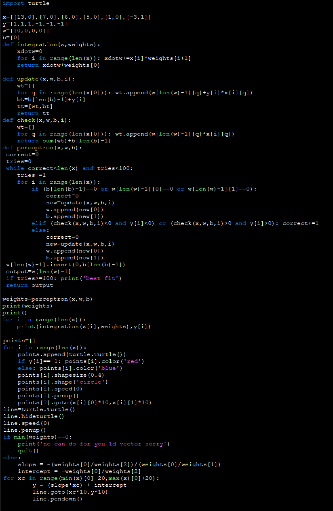

Perceptron (NN v1-1)
 First, I created a perceptron following a course on Brilliant.
The backpropagation method used in all Version 1 networks did not involve calculus at all, instead the product of the output and the label was added to each weight after every
forward propagation.
First, I created a perceptron following a course on Brilliant.
The backpropagation method used in all Version 1 networks did not involve calculus at all, instead the product of the output and the label was added to each weight after every
forward propagation.
I remember being very proud of this code, I used a variation of it during a speech I gave to demonstrate how neural networks could naturally bias one characteristic of an input.
Click the code below to download the python file:

2 Layer Network (NN v1-2)
Next, I created a 2 layer neural net following the course on Brilliant.
I was very surprised when it seemed to work, and haven't touched this specific code since, so I really have no idea if it is effective!
Click the code below to download the python file:

<
Contents:
Click to jump to chapter: